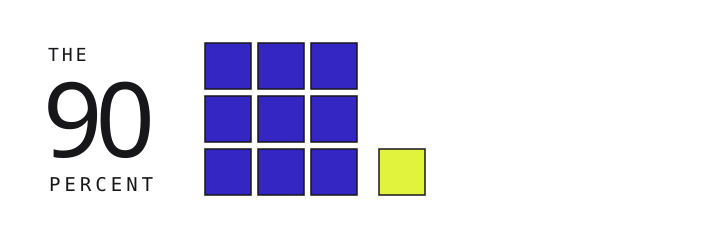

BRAND / 01 — LOGO UFFICIALECOMPONENTE CANONICA · NON VARIARE
The 90 Percent

Usare sempre questo asset condiviso. Non ridisegnare, ricolorare o sostituire il logo con altre varianti.
design-system/assets/the-90-percent-logo.svgUna grafica che colpisce. Un'interazione che fa capire. Un metodo che permette di verificare.
Carta calda, inchiostro duro, due colori di tensione e uno di azione. Il contrasto deve guidare l'attenzione, non trasformare ogni elemento in una sirena.

Usare sempre questo asset condiviso. Non ridisegnare, ricolorare o sostituire il logo con altre varianti.
design-system/assets/the-90-percent-logo.svgGerarchia estrema, ritmo da poster. Solo titoli e numeri che meritano attenzione.
Due persone partono da posizioni diverse. Una domanda semplice: quali percorsi diventano possibili, e per chi?
Mono per numeri, unità, riferimenti e microcopy; il testo lungo rimane in un sans leggibile.
Le forme sono nette, ma gli affordance non devono essere enigmatici: selezioni persistenti, focus ben visibile, azioni che restituiscono feedback.
Un'azione dominante e una secondaria. L'acid segnala la chiamata principale; nessun bottone è decorativo.
Una selezione per volta, con testo e colore. La domanda non cambia silenziosamente quando modifichi una metrica.
FONTE: dataset sintetico, nessun ente statistico reale. Anno dimostrativo.
Il dettaglio metodologico non interrompe l'esplorazione. È sempre apribile vicino al grafico, con etichette parlanti.
I valori in questa demo non derivano da stime. Nei casi reali documenteremo fonte, coorti, pesi, popolazione e definizione del quintile.
Una probabilità condizionata non equivale alla quota di tutta la popolazione. Non trasformare queste matrici in flussi assoluti senza margini.
Grafici che hanno un senso anche senza mouse. Prova filtri, selezioni, vista tabellare, esportazione CSV e riproducibilità del permalink. Tutto con dati di esempio.
Quote percentuali simulate distribuite su dieci gruppi di uguale numerosità. Ogni serie somma a 100%.
Le quote sono elementi inventati che sommano a 100. Nelle pubblicazioni reali specificare reddito lordo/netto, patrimonio netto, unità (individuale o familiare), periodo e pesi statistici.
Probabilità simulate di passare da quintile di origine (righe) a quintile di destinazione (colonne).
COLONNE: QUINTILE DI DESTINAZIONE →
Le righe sommano a 100. Il flusso di popolazione dipende anche da quanti individui sono presenti in ogni origine. Per dati reali indicare coorti, età misurata, definizioni di reddito e base statistica.
Serie dimostrativa di quote aggregate percentuali tra anni immaginari 1990–2025.
La condivisione di assi deve essere documentata; serie reali richiedono controlli di continuità delle definizioni e comparabilità nel tempo.
Il template deriva dalla relazione statistica, non dalla voglia di stupire. Gli altri tredici contratti sono descritti nel documento DATA_VIZ.md.
SCHEDE: V01–V16, con requisiti di input, rendering, interazione, tabella equivalente e anti-pattern.
Un'identità può estendersi a inchieste, esploratori e caroselli se le gerarchie restano prevedibili e le fonti non vengono sacrificate.
Una domanda, quattro capitoli narrativi e un grafico per ogni passaggio importante. No animazioni che nascondono la prova.
Selettori, grafico, insight e tabella. La configurazione si può condividere attraverso URL e CSV coerenti.
Un claim per card, un segno visivo dominante, fonti e unità leggibili sul telefono. Nessun screenshot di una dashboard miniaturizzata.
Codex deve poter generare nuovi pezzi senza reinterpretare l'identità ogni volta: token centralizzati, componenti, contratti chart, comportamento e test.
Palette, font, spacing, dimensioni, scale dei grafici e stati. Dal JSON viene generato il CSS con uno script Node senza dipendenze.
node scripts/generate-css.mjsLe regole che Codex deve consultare prima di sviluppare: token, UX, chart frame, fonte, accessibilità, esempi, test. Il sistema resta consistente tra repository.
Leggere AGENTS.md → codificare → testare